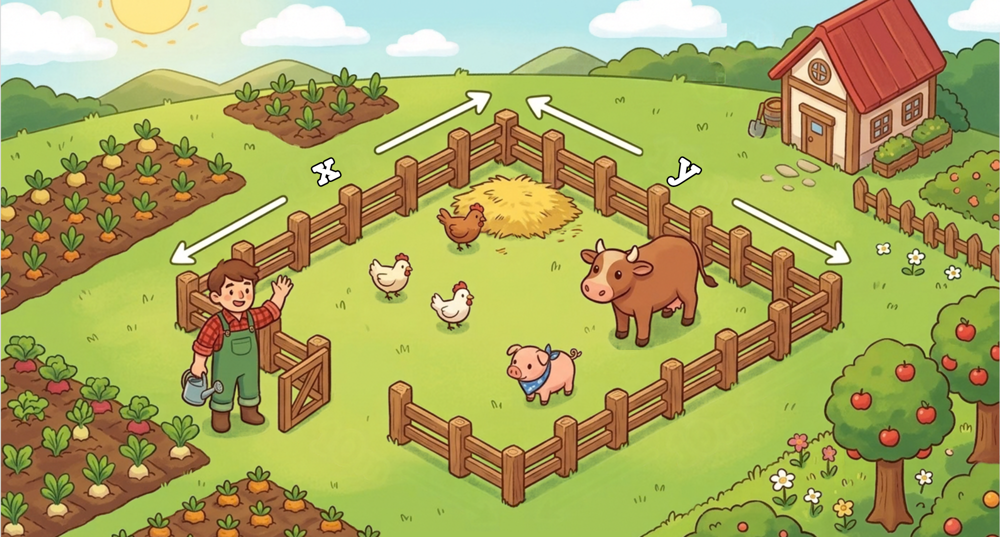

Questionamentos e abstrações
Um fazendeiro quer construir um cercado mas dispõe de \(40\) metros de material. Há, evidentemente, algumas possibilidades para distribuir o material entre comprimento e largura.

Análise Inicial
Utilizando o applet do GeoGebra a seguir, tente responder as questões:
- O retângulo de maior comprimento produz necessariamente a maior área?
- Existe uma combinação de dimensões que parece produzir uma área máxima?
- O que acontece com a área quando uma das dimensões fica muito pequena?
- O que acontece quando as duas dimensões se aproximam?
Atividade GeoGebra
Utilize o controle deslizante do GeoGebra para tentar responder as questões elaboradas.